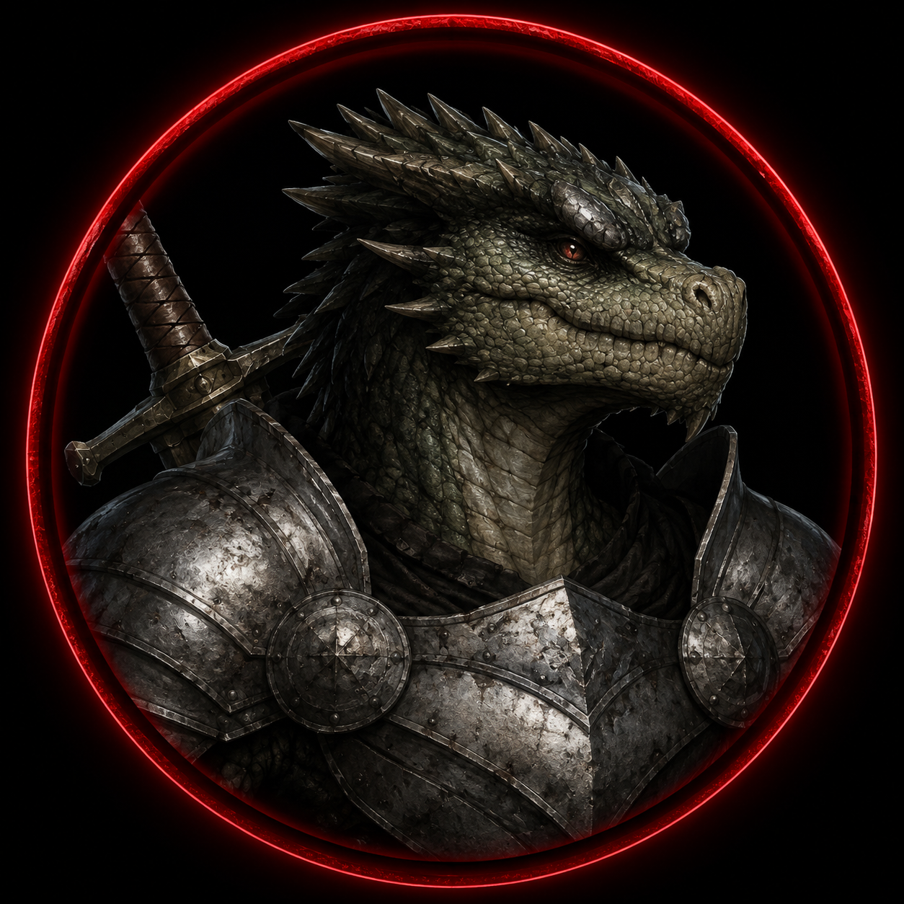

━━━ THE LAST DAWN ━━━
🔱 REGISTRO OFICIAL — SESSÃO XIX
⚔️ EXPERIÊNCIA DE OFÍCIO
🩺 Elion — Médico
+20 XP | 900 → 920 XP — Ofício: Mestre
• Atendimento médico durante a sessão, costurando o ferimento de Crocotop
🏹 Caçador — Rastreador
+0 XP | 650 XP — Ofício: Trabalhador
🌿 Evangeline — Herbalista/Alquimista
+0 XP | 600 XP — Ofício: Trabalhador
🐊 Crocotop — Pescador
+0 XP | 450 XP — Ofício: Trabalhador
🍳 Eren — Cozinheiro
+0 XP | 360 XP — Ofício: Trabalhador
⚔️ Dravon — Mercenário
+0 XP | 300 XP — Ofício: Estagiário
🔨 Kael — Ferreiro
+0 XP | 240 XP — Ofício: Estagiário
🧠 NEA — NÍVEL DE EXPOSIÇÃO ARCANA
Nenhuma alteração de NEA durante a sessão.
| Personagem | NEA |
|---|---|
| 🩺 Elion | 40,0% |
| 🏹 Caçador | 39,0% |
| 🌿 Evangeline | 42,0% |
| 🐊 Crocotop | 45,0% |
| 🍳 Eren | 45,6% |
| ⚔️ Dravon | 31,0% |
| 🔨 Kael | 30,0% |
⚖️ HONRA
🩺 Elion — 100% → 80%
• A morte de ~30 guardas inocentes de Sylvanora. Variação: −20%
🍳 Eren — 55% → 35%
• Atacou o Mapeador pelas costas. Variação: −20%
🏹 Caçador — 100% → 100% (Sem alteração)
🌿 Evangeline — 100% → 100% (Sem alteração)
🐊 Crocotop — 52% → 52% (Sem alteração)
⚔️ Dravon — 7% → 7% (Sem alteração)
🔨 Kael — 60% → 60% (Sem alteração)
☠️ CORRUPÇÃO
Nenhum personagem apresentou alteração de Corrupção durante a sessão.
🩸 FERIMENTO — CROCOTOP
Durante o confronto, Crocotop foi atacado violentamente pelo enorme leopardo.
O ataque abriu um ferimento profundo em suas costas.
Após a fuga do animal, Elion realizou atendimento médico e costurou o ferimento manualmente.
Estado atual:
• Ferimento estabilizado
• Sangramento controlado
• Sem risco imediato de morte
• Dor e sensibilidade permanecem
• A cicatrização completa ainda levará tempo
📚 DESCOBERTAS IMPORTANTES
• Os sinos de Sylvanora anunciaram a chegada de um grupo de aventureiros
• Os guardas inicialmente atacaram os aventureiros
• Os guardas reconheceram a presença do grupo e ordenaram que atacassem
• Elion tentou impedir o conflito e propôs uma conversa
• O líder dos aventureiros concordou
• Antes que a conversa começasse, um elfo matou o líder com uma flecha na cabeça
• Os atacantes eram elfos de Sylvanora
• O confronto recomeçou após o assassinato do líder
• Eren utilizou teleporte para atacar o arqueiro
• O arqueiro ficou gravemente ferido e posteriormente morreu
• Eren atacou o Mapeador pelas costas
• O Mapeador morreu devido aos ferimentos
• Elion se teleportou para recuperar os documentos
• Os guardas acusaram Elion de ser um traidor
• Aproximadamente 30 guardas foram mortos por Elion
• Caçador tentou diversas vezes interromper o combate
• Um dos adversários de Caçador morreu após se ferir com a própria espada
• Evangeline foi atacada por um enorme leopardo
• Crocotop também enfrentou o animal
• Evangeline tentou ajudar mesmo enquanto era atacada
• Crocotop tentou fazer o leopardo desistir
• O leopardo acabou fugindo
• Crocotop ficou com um ferimento profundo nas costas
• Elion realizou os primeiros cuidados médicos
• Elion costurou o ferimento de Crocotop
• O grupo recuperou documentos importantes
• A guarda real percebeu a movimentação dos aventureiros
• O grupo conseguiu escapar pela estalagem
• Os documentos agora estão nas mãos do grupo
🏆 DESTAQUES DA SESSÃO
✦ Toque nos selos para revelar os heróis

• Ataques decisivos com teleporte estratégico
• Eliminou ameaças importantes
• Contribuiu para a recuperação dos documentos

• Recuperou os documentos
• Enfrentou os guardas de Sylvanora
• Costurou o ferimento de Crocotop

• Continuou tentando impedir que a criatura fosse morta
• Tentativa de resolver sem eliminar o animal
🎬 MOMENTOS MARCANTES
- Os sinos de Sylvanora tocando
- A chegada dos aventureiros humanos
- Os guardas reconhecendo a presença do grupo
- Elion tentando impedir o combate
- O líder aceitando conversar
- O assassinato do líder por uma flecha élfica
- A revelação de que os atacantes eram elfos de Sylvanora
- Eren se teleportando para trás do arqueiro
- Eren atacando o Mapeador pelas costas
- Elion recuperando os documentos
- Os guardas chamando Elion de "traidor"
- Elion enfrentando aproximadamente 30 guardas
- Caçador tentando interromper o combate
- O inimigo de Caçador se matando com a própria espada
- O enorme leopardo atacando Evangeline e Crocotop
- Crocotop tentando fazer o animal desistir
- O leopardo fugindo
- Crocotop ficando com um enorme ferimento nas costas
- Elion costurando o ferimento de Crocotop
- O grupo recuperando os documentos
- A guarda real percebendo a fuga
- O grupo escapando pela estalagem
📖 ENCERRAMENTO
Sylvanora não recebeu os aventureiros.
Recebeu uma guerra.
Uma conversa foi interrompida por uma flecha.
Um líder morreu.
E então o sangue tomou as ruas.
Eren atacou pelas sombras.
Caçador tentou impedir a violência.
Evangeline tentou ajudar.
Crocotop tentou fazer o monstro desistir.
E Elion...
Elion matou.
Trinta guardas.
Trinta vidas.
E depois do massacre, voltou a fazer aquilo que sempre fez.
Curar.
Suas mãos que haviam causado morte agora costuravam as costas feridas de Crocotop.
Enquanto isso, os documentos finalmente estavam seguros.
E dentro deles...
Talvez estivesse a verdade.
Mas em Sylvanora, a verdade não parecia ser algo que alguém queria que eles descobrissem.
A Quinta Tempestade continua.